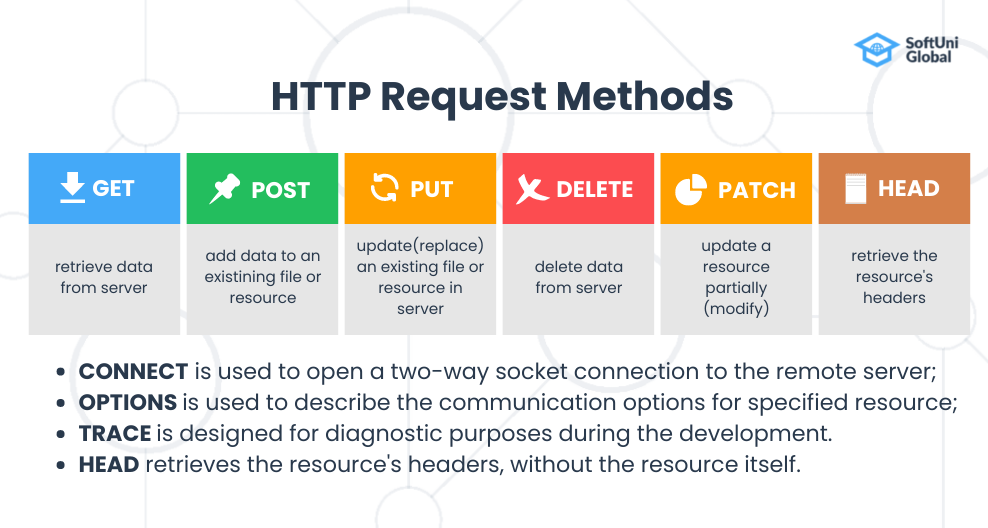
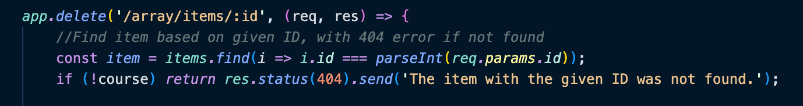

What is Node.js?
Node.js is an asynchronous, cross-platform Javascript based runtime environment
for server and network-side applications. It is built on the V8 Javascript Engine,
or what powers Google Chrome, which is why Node.js is Javascript based.
Also, Nodejs is a runtime environment that allows you to run JavaScript, outside the web
browser, on a server.
Asynchronous
Executing tasks asynchronously means that you don’t have to wait for a task to finish
before moving on to a different task.
The alternative is executing tasks synchronously and having to wait for one task to
complete before moving on (ie. submitting a form in a web page and the UI blocks any
other tasks until the form has submitted).
V8 Javascript Engine
This is the engine that takes our JavaScript and executes it while browsing with Chrome.
It is independent of the browser in which the engine is being hosted.
Runtime Environment
A runtime environment is where the application code is ran. These also typically include
common libraries but do not include the capability to edit the code (this is done in a
development environment or code editor).
What is its purpose?
Node.js is designed to build fast and scalable network applications by employing push technology
over WebSocket.
WebSocket is a computer communications protocol, providing simultaneous two-way communication
channels over a single Transmission Control Protocol (standard that enables apps and devices
to exchange messages over a network) connection.
In short:Node.js allows web applications to have real-time, two way connections between client
and server. This allows them to initiate communication and exchange data more efficiently.
Good for
Low processing applications such as a chat or a system monitoring dashboard.
Bad for
Applications with CPU intensive processes like processing graphics, mathematical calculations, and video
or image compression.
Why is it important?
Javascript Based
Because Node.js runs on the Javascript based V8 Engine, your interactive front end components and Node.js
back end
components are written in the same language. This helps save time by avoiding converting functions or
objects
into different languages.
Fast
Node.js is fast and lightweight because it works on tasks in a non-blocking, asynchronous system. This
means
that tasks can run at different times and more demanding tasks will not stop (or block) other functions.
This
is helpful when completing longer wait time tasks (i.e. network accessing and file system accessing)
because
Node.js will allow these tasks to run in the background and other tasks continue running.
Scalable
Node.js is highly scalable and is able to handle a growing amount of activity. It can handle many
simultaneous
requests thanks to it's non-blocking I/O (input/output) system and it's single threaded
event loop.
The event loopis a continuous process that waits for and dispatches events/messages in a program.
It keeps Node.js running,
responding to requests, and handling I/O operations without getting blocked.
How does it integrate into the MERN Stack?
What are the steps to integrate it?
What are its dependencies?
Are there any considerations for this configuration? What are the most common and how are they done?
Common Functionality
Node.js creates a runtime environment/ local host for your program. Additionally, through the help of modules, common tasks like creating
HTTP servers and requests, accessing and manipulating the file system, and handling events are made simple.
Node Modules
Node Modules are blocks of code that include functions to use within your code. There are multiple source options for modules:
- Included with Node.js- core modules included with Node.js download.
- NPM- modules can be downloaded from NPM
- Create Your Own- create your own module by creating a file for it, building the functions, then using the
require()
function to use it in a different file.
Modules are very important because they are reusable and they help break down complex pieces of code into manageable chunks.
Core Modules
Nodes.js's Core Modules are modules included in the Node.js installation. These modules can be loaded into your program by using the required() function.
const module = require('module_name);
Some of the most commonly used core modules:
| Core Modules |
Description |
| http |
Creates an HTTP server in Node.js |
| events |
Handling events |
| assert |
Provides a set of assertion tests |
| fs |
Used to handle file system |
| path |
Includes methods to deal with file paths |
| os |
Provides information about the operating system |
| querystring |
Utility used for parsing and formatting URL query strings |
| url |
Module provides utilities for URL resolution and parsing |
| Find full list of core modules: |
Here |
Creating an HTML Server:
A very common function of using Node.js is creating an HTTP server using the HTTP module. Here is what a simple HTTP server would
look like using this module:
NPM
NPM (aka Node Package Manager) is the largest software registry which manages packages (or modules). It hosts thousands of packages
which can be downloaded and applied to your projects.
NPM is installed with the Node.js download. When you are ready to use modules or prepare the package.json file for your project,
you will need to use the following command in the terminal:
npm init
You can browse NPM's website (https://www.npmjs.com/) to find different packages. However,
to use the packages in your code, you will need to use a unique install command through the command line interface/terminal.
For example: node i express installs the Express.js package in your project.
Finally, to use a NPM package in your project, you will need to load the package into the program with the required function:
const pn = require('package-name');
Asynchronous programming in Node.js
Programming asynchronously means that you don’t have to wait for a task to finish before moving on to a
different task. Intensive tasks will run in the background without blocking other parts of the code.
Callbacks help us make asynchronous calls.
Callbacks are a function which is passed as an argument in another function.
Callback functions are called when the function that contains the callback as an argument completes its execution, and allows the code in the callback to run in the meantime.
For example, we can define a callback to print the error and result after the function execution
function function_name(argument, function (error, result){
if(error){
console.log(error)
} else {
console.log(result)
}
}) // bold = callback function
or with an arrow function:
function function_name(argument, (callback_argument) => {
// callback body
})
For a function that reads text froma file and displays the data in the console log
An example without callbacks:
const fs = require('fs');
const data = fs.readFileSync('hello.txt', 'utf-8');
console.log(data);
For any code after the readFileSync method, would need to wait for it to finish processing, blocking any other functions.
An example with callbacks:
const fs = require('fs');
const data = fs.readFile('hello.txt', 'utf-8', function(err, result){
if(err){
console.log(err)
} else {
console.log(result)
}
});
This example includes a callback function.
When the readFile method is done the callback is triggered and prints the results.
Setting Up a Node.js environment
Step 1: Download and install Node.js
You can download Node.js from https//nodejs.org. NPM will also be installed along side Node.js
Step 2: Open Terminal and Create a Directory
In the terminal, use the following command to make a new file directory:
mkdir [directory name]
Then use this command to move into (or change to) the new directory:
cd [directory name]
Step 3: Set Up a package.json File
This package.json file will hold important information including dependencies for the project, author information, etc. In the terminal,
use the following command:
npm init -y
-y accepts the default settings for setting up the file. You can edit this file at any time so you can use the -y
to have a quicker set up.
Step 4: Begin Coding in VS Code
Begin writing code in the VS Code code editor. Open the new folder in VS Code or in the terminal, type in command code .. This
command will open VS Code and the . refers to the current file in the directory.
You will see the previously set up package.json file in the file directory.
Step 5: Create a index.js File
The index.js file is the default main file for this project. You can create this file in the directory in VS Code by selecting the “New File”
button.
Important: The package.json file will expect a “main” file which by default is named “index.js”. If you decide to name your main file
something different, make sure to change the name in the package.json file.
Step 6: Your Node.js Project is Set Up!
You can now start coding or working with packages.
Building a REST API with Express.js
What is a REST API?
A REST API is a standard program communication interface which implements the REST (Representational
State Transfer) architecture
style.
This architecture consists of unique URLs assigned to a resource or endpoint which holds data. Users can
access the
resource/endpoint data by making a HTTP request and using the required URL format and appropriate HTTP
method:
http://domain-name.com/HTTP-method/resource-name
A Review on HTTP Methods

These HTTP requests utilize CRUD operations (Create, Read, Update, Delete).
After the HTTP request is sent, the server will process it and send back a response with a status code
and
(hopefully) the requested data.
Server Status Codes
- 2** - GOOD
- 4** - Something is wrong with the request
- 5** - Something is wrong with the server/server response
What is Express.js?
When creating an api with multiple HTTP requests/responses, the code can get pretty complicated. A
framework,
like Express.js, helps to give the application a structure and easily add more paths.
Installing Express.js
Express.js is a packae found on npm and can be installed in your project through the terminal.
In the terminal, ensure you are in the appropriate directory for your project (or create a new project)
and then
use the following command to install the Express.js module.
npm i express
Move to VS Code and use the require() function to use Express.js.
const express= require('express');
Call the express function and store the result in an object called 'app'
This is a standard set up for an express app and represents the entire application. From here, you can
perform various
methods on the app object.
This application is set up and ready to use!
Building the REST API
REST APIs utilizes the HTTP requests as methods on the app object to complete basic CRUD operations.
This includes:
- Read: app.get()
- Create: app.post()
- Update: app.put()
- Delete: app.delete()
Read: app.get()
This is a simple get path for the root ('/').
The get() method accepts the URL path as the first parameter and then a callback function as
a second parameter. The
callback function accepts the HTTP request and response as parameters.
When the client requests the root resource ('/'), the callback function will execute and
provide
the appropriate response.
The res.send() method will define what will be sent in the response back to the client.
After setting up the first resource path, you will need to set a port for the app object to listen to for
incoming HTTP
requests.
The app.listen() method will accept the assigned port (3000) to respond to.
You can optionally set a function as the second parameter to give a ready message. This is helpful to let
the user know
the API is working.
Example:
To run the app, use the following command in the terminal:
node index.js
The console log from the app.listen() will appear in the terminal when the API is active.
Enter localhost:3000 in your browser.
You will see your response message appear.
Once the first resource path is set up, you can add more resource paths as needed. The resource path
below responds with
a simple array.
NOTE: The port number used in this example is an arbitrary number. In a real case, you would utilize a
port number set
as an external environment variable.
This lets the program know to try to find a port number from the environment variables and, if one is not
found, use the
arbitrary port 3000.
TIP: After each change to the code, Node.js will need to be restarted to see changes in the browser. A
helpful
module called Nodemon can be installed to automatically restart Node.js with each change.
Create: app.post()
An array called items was created for this example. Creating, updating, and deleting example
opterations will
use this array. This code is assuming that the name will come from the body of the post request in a
key:value pair.
IMPORTANT: Express.js will not automatically parse new JSON data. You will need to add middleware at the
beginning
of the code so the JSON data coming with new HTTP requests will be properly parsed.
The post() resource path is set up with the same URL path and response/request callback
layout.
However, in the call back function code block, you will need to prepare for new data from the client. You
should create
a new item and create the format for the incoming data. In this case, we will assign an id and retrieve
the name from
the client.
To update our array with the new item, you will need to push the new item to the array.
Finally, as confirmation, it is a good idea to send the new item as a response back to the client.
Update: app.put()
Before you can update a particular item, you first need to look for it in our array. You can find the
specific item by adding
:id in the route path parameter.
It is best practice to validate if the ID exists before the code block fully executes. If the ID
doesn't exist, you can stop the
function using a return and provide a 404 error back to the client.
In this example, we are updating the item's name from the data entered into the HTTP request body.
Finally, as confirmation, it is a good idea to send the new item as a response back to the client.
Delete: app.delete()
The delete() method begins the same as the put() method: by finding the
specific item by adding :id in the route
path parameter and including instructions for a 404 error if the ID doesn't exist.

To delete the item, you should first find the index of the item from the array using the built in
indexOf() method and assign value to a variable.
Next, you can use the splice() method to remove this item by giving it the index value of
the item and removing 1 object.
Finally, as confirmation, it is a good idea to send the new item as a response back to the client.
Best practices and security considerations
A secure Node.js application is important in protecting user data and application function.
Node.js gets a lot of power in NPM and it's modules, however there can be security vulnerabilities found
in their files.
Here are some best practices and securiy considerations for your Node.js project
Keep your NPM libraries up to date
NPM libraries can introduce security risks into your application. As vulnerabilities are discovered,
maintainers will push out an updated version of the package.
You should update to the latest version of each package to make sure you are as secure as you can be.
Never run Node.js with root privileges
Follow the Principle of Least Privilege and give any user accounts or processes only the
minimal/necessary amount of access needed to complete the task.
The best practice here is to create a dedicated user for running Node.js. This user should have only the
permissions required to launch the app. This way, attackers
who succeed in compromising the backend will be restricted to that user's privileges, limiting the
potential damage they can cause.
Limiting exposure of information to an unauthorized users
During a package publication, all of the files and folders in your current directory will be pushed to
the NPM registry. You are able to define a blocklist using .npmignor
and .gitignor that will let you better control what you publish. If there is an exposure you are able to
unpublish the package.
Denial of service of HTTP server
This is an issue where the application becomes unavailable for its purpose due to how it processes
incoming HTTP requests. The WebServer needs to handle socket errors correctly,
such as having an error handler, or it will be vulnerable. You can also configure the server timeouts,
so that idle connections or slow requests can be dropped.